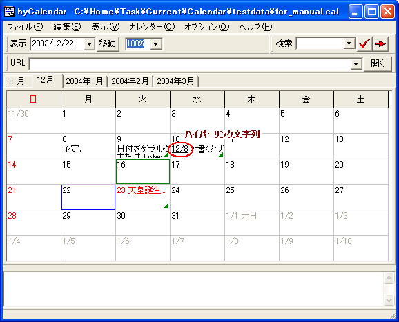
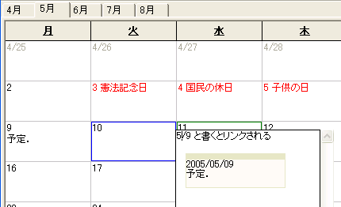

テキスト中にリンク対象となる文字列が含まれている場合， 自動でハイパーリンクが設定されます． ハイパーリンクされた文字列をマウスで ダブルクリックすると， そのリンクが開かれます． URL の場合はエクスプローラでそのリンクを開き， 日付の場合は，カレンダー内での日付移動となります．
リンク対象となる文字列は，次のとおりです．
file://C:/Home/schedule.txt
-- これが基本形です．
file://"C:/Home/全角文字.txt"
-- "" で括られた範囲は，全角文字や空白を認識します．
file://"C:/Program Files/Adobe/"Acrobat" 6.0/"ReadMeJ.htm
-- "" は，複数登場できます．
file://"C:\Program Files\Adobe\Acrobat 6.0\ReadMeJ.htm"
-- \ も標準の URL としては使えませんが，"" 内では有効です．
0/1/1 → 2000/1/1
2003/1/1 → 2003/1/1
x1/1 → 現在の年/1/1 ("x"は無視される)
1/1 → 現在の年/1/1
03/1 → 現在の年/3/1
03/1x → 現在の年/3/1("x" は無視される)
1979/1/1 → カレンダーで扱える範囲外なのでリンクされない
ただし，「現在の年」は，どの欄に記載された日付かによって扱いが異なる．
カレンダー予定欄の場合: その日付が属している年
フリーメモ欄の場合: 現在のコンピュータの年
TODOリストの場合: そのTODOアイテムが最後に編集された時点の年
ハイパーリンクされているかどうかは， マウスカーソルの形状が変化することで分かります． また，日付メモに関しては， フォントの変更において ハイパーリンク文字列のフォントを変更しておくと， 見た目上でも変化させることができます．
以下のスクリーンショットでは，ハイパーリンク文字列のフォントを 下線付きに設定しています．
標準では，記入された日付の上にマウスカーソルを置いただけで その日付の予定内容がポップアップ表示されます． ポップアップウィンドウからは， テキストをコピーしたり，URL にアクセスしたり， 予定中に含まれる他の日付を参照したりといったことが可能です．
ポップアップウィンドウは，[ハイパーリンク表示] の設定に従って，カーソルが日付枠の上ないし日付文字列の上に移動したときに表示されます．
その日付の内容がポップアップで表示され， 枠に収まらない内容を確認することができます （「枠からはみだした内容がある日付ではポップアップを表示する」 オプションのチェックを外すと表示されなくなります）．
日付上にカーソルが乗ったときに，その日付の予定内容が表示されます （「日付リンク先の内容をポップアップ表示する」オプションのチェックを外すと 表示されなくなります）．
通常はマウスカーソルから少し離れた位置に表示されるため， ポップアップウィンドウの中身にアクセスしたいときは， 日付をクリックし，ポップアップウィンドウがアクティブにしてください． なお，日付メモの編集中だけは，編集が終了してしまうため， ポップアップウィンドウはアクティブになりません．
ポップアップウィンドウ中に表示されている日付の内容も ハイパーリンクの対象です． ポップアップウィンドウは複数枚を重ねて表示することができるので， 次々とリンク先をたどっていくことができます．
この機能も，「日付リンク先の内容をポップアップ表示する」オプションの チェックを外すと無効になります．
[システム表示]タブから タスクトレイアイコンを利用することが選択されている場合にのみ利用可能です．
現在の日付に対応した予定が画面右下に表示されます． もう一度タスクトレイアイコンを右クリックすると，ウィンドウは閉じられます．
ポップアップウィンドウは， 「ポップアップ表示を時間経過では消さない」オプションが有効でなければ， 一定時間で閉じられます． また，リンク範囲外（メインウィンドウ上）に カーソルが移動したとき， メインウィンドウ上で何らかの操作が行われたとき， アクティブな間に ESC キーが押されたとき， タスクトレイアイコンが左クリックされたときなどに閉じられます．
ハイパーリンクには，文字列をダブルクリックする以外にも， 次のようなアクセス方法があります．
カレンダーエリアおよびフリーメモ欄は， Windows エクスプローラからのファイルのドラッグ＆ドロップを受け付けます．
カレンダーエリアにドロップした場合は対応する日付メモの末尾に，
フリーメモ欄にドロップした場合はフリーメモの先頭に，
file:"ファイルまでのフルパス"形式の URL が挿入されます．
複数のファイルを同時にドロップした場合は，
URLは改行で区切られます．